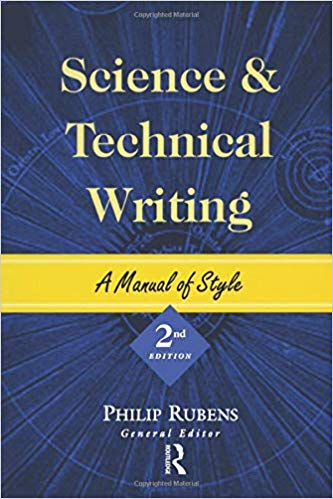

STW at Mass Academy is taught by Dr. Crowthers. STW stands for Science and Technical Writing. In STW, we learn how to write science papers. We mainly focus on using proper grammar and style for a formal science paper or article. We spend a lot of time reading research papers and science articles related to our STEM topics, analyzing them, and taking notes on them to use for our projects.
